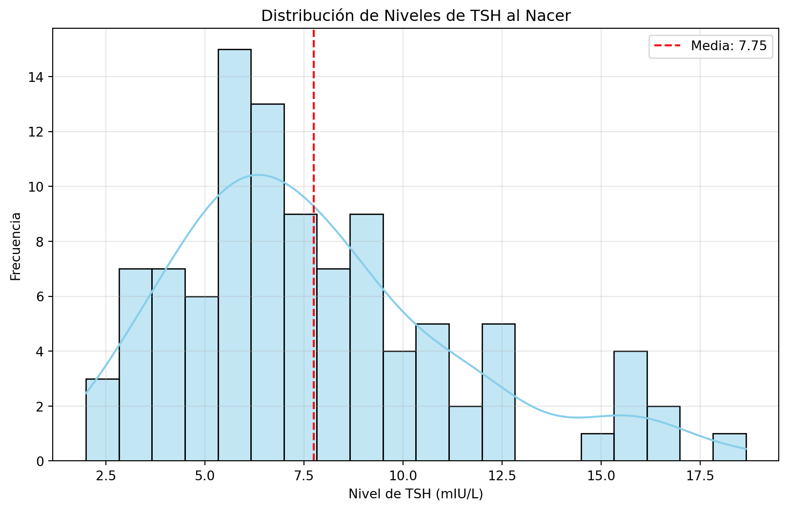

Code
import matplotlib.pyplot as plt
import seaborn as sns
import numpy as np
import plotly.graph_objects as go
np.random.seed(42)
tsh_levels = np.random.lognormal(mean=2, sigma=0.5, size=100)
# Gráfico de seaborn
plt.figure(figsize=(10, 6))
sns.histplot(tsh_levels, bins=20, kde=True, color='skyblue')
plt.title('Distribución de Niveles de TSH al Nacer')
plt.xlabel('Nivel de TSH (mIU/L)')
plt.ylabel('Frecuencia')
plt.axvline(tsh_levels.mean(), color='red', linestyle='--', label=f'Media: {tsh_levels.mean():.2f}')
plt.legend()
plt.grid(alpha=0.3)
plt.show()
# Gráfico de Plotly
fig = go.Figure(data=[go.Histogram(x=tsh_levels, nbinsx=20, histnorm='probability density')])
fig.update_layout(title='Distribución de Niveles de TSH al Nacer',
xaxis_title='Nivel de TSH (mIU/L)',
yaxis_title='Densidad de probabilidad')
fig.add_vline(x=tsh_levels.mean(), line_dash='dash', line_color='red', annotation_text=f'Media: {tsh_levels.mean():.2f}')
fig.show()